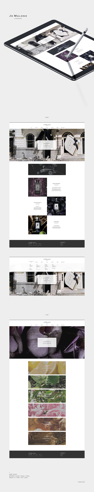
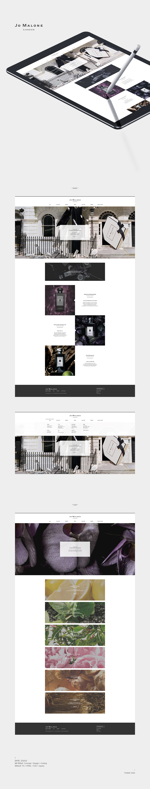

기존 디자인은 런던의 ‘조말론(jo malone)’ 사이트 그대로 시원시원한 레이아웃과 대담함이 느껴지는 듯 했다. 하지만 우리나라에서의 조말론은 높은 가격대와 고급스러운 이미지로 쉽게 접하지 못하는 향수 브랜드 중 하나이기 때문에 대담함 보다는 ‘섬세함’ 또는 ‘감성적인’ 컨셉이 더욱 잘 어울릴 것이라고 생각했다.
· Date : 2016.01
· My role : Concept, Design, Coding
· Skills : Ps + HTML + CSS + jQuery
 


Copyright 2016. HELLO DWORLD. Dahye Yoon All Right Reserved.